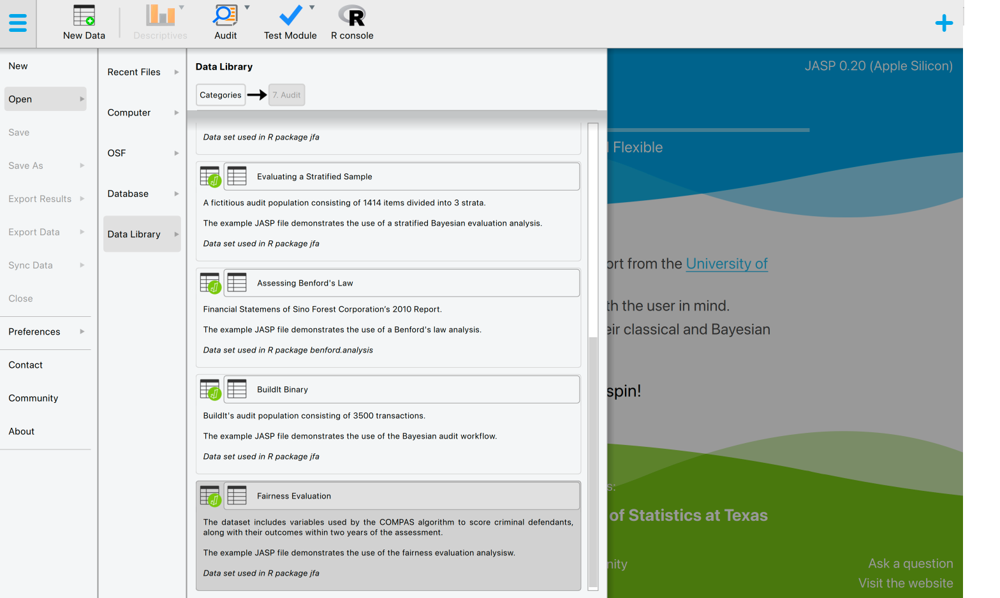
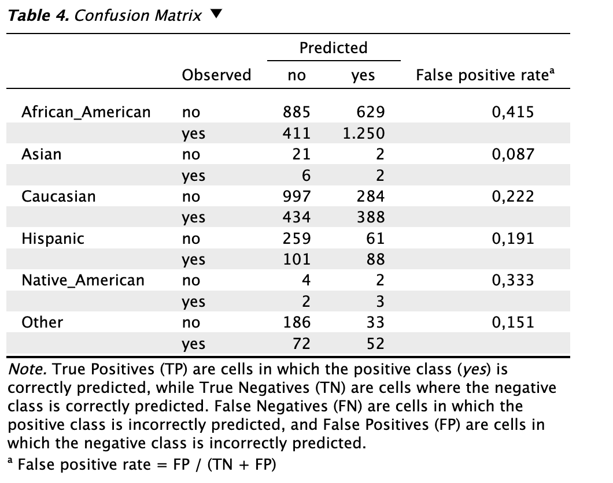

Evaluation
This chapter is about the ‘Evaluation’ analysis in the ‘Algorithm Auditing’ section of the module.
Purpose of the analysis
The goal of this procedure is to assess the extent to which an algorithm’s predictions are fair toward protected groups based on a sensitive attribute and to test this fairness with a type I error rate corresponding to a chosen significance level. This allows auditors to determine, with a certain level of assurance, whether the use of the audited algorithm results in discriminatory acts.
Practical example
Let’s explore an example of an evaluation analysis. To follow along, open the ‘Fairness Evaluation’ dataset from the Data Library. Navigate to the top-left menu, click ‘Open’, then ‘Data Library’, select ‘7. Audit’, and finally click on the text ‘Fairness Evaluation’ (not the green JASP-icon button).

This will open a dataset with 6172 rows and seven columns: ‘TwoYrRecidivism’, ‘AgeAboveFoutryFive’, ‘AgeBelowTwentyFive’, ‘Gender’, ‘Misdemeanor’, ‘Ethnicity’, ‘Predicted’. The ‘TwoYrRecidivism’ column indicates whether the offender committed a crime within two years of being released and, therefore, provides the ground truth information on the offenders’ recidivism. The ‘AgeAboveFoutryFive’ and ‘AgeAboveFoutryFive’ columns indicate whether the offender is over the age of 45 and whether the offender is under the age of 25, respectively. The ‘Gender’ column indicates whether the offender is a female or a male. The ‘Misdemeanor’ column indicates whether the crime commited is a misdemeanor (i.e., a minor wrongdoing, less serious than a felony). The ‘Ethnicity’ column indicates the offender’s ethnicity (African-American, Asian, Caucasian, Hispanic, Native American, or Other). The ‘Predicted’ column indicates whether the COMPAS algorithm classifies the offender as low or high risk of committing another crime after being released. In this scenario, we seek to determine, with 95% confidence, whether the COMPAS algorithm discriminates against offenders based on their ethnicity.
Main settings
To evaluate the fairness of the COMPAS algorithm’s prediction, we open the ‘Evaluation’ analysis within the section ‘Algorithm Auditing’ within the Audit module. The interface for the evaluation analysis is displayed below.
These are the main settings for the analysis:
- Variables: Begin by entering the variable that contains the true recidivism values of the offenders into the ‘Ground Truth Information’ field. Then, input the variables that hold the predicted recidivism values and the offenders’ ethnicity into their respective fields.
- Confidence: Specify the confidence level for your analysis. This level, which complements the significance level, dictates when to reject the null hypothesis and the amount of work needed to approve the fairness of the algorigm. A higher confidence level requires more audit evidence to conclude that the algorithm is not discriminating against certain social groups. In this example, we use a confidence level of 95%.
- Fairness measure: Specify the fairness measure for your analysis. The possible options are: ‘Predictive rate parity’, ‘Negative predictive rate parity’, ‘False positive rate parity’, ‘False negative rate parity’, ‘Equal opportunity, ’Specificity parity’, ‘Disparate impact’, ‘Equalized odds’, ‘Accuracy parity’. It is possible to be guided in choosing the most suitable fairness measure for your dataset by using the decision workflow provided in the ‘Fairness Workflow’ analysis within the section ‘Algorithm Auditing’ within the Audit module. In this example, we use the ‘False positive rate parity’ as fairness measure.
- Levels: Privileged group:Select which group, identified by the sensitive attribute’s values, is the privileged one (i.e., which group is advataged by the algorithm’s outcome). In this example, the privileged group is the Caucasian one.
- Levels: Positive class:Select which class of the algorithm’s predictions is the favorable outcome. This refers to the outcome that is beneficial to those who receive it. In this example, the positive class is the ‘yes’ classification.
- Alt. Hypothesis:Choose whether to calculate a two-sided test or a one-sided test to evaluate the algorithm’s fairness. In this example, we select the option ‘Unprivileged ≠ privileged’.
- Display: Explanatory text: Finally, select whether to show explanatory text in the output.
Main output
The main table in the output below shows the omnibus test — Pearson’s chi-square test — which compares all the groups identified by the values of the sensitive attribute, based on the direction of the alternative hypothesis. The ‘null’ column specifies the name of the sensitive attribute. The ‘n’ column specifies the total number of items in the dataset. The ‘χ²’ column displays the value of the test statistic for the overall test. The ‘df’ column indicates the degrees of freedom, which is the parameter for the chi-square distribution. The ‘p’ column shows the p-value of the omnibus test, based on which the null hypothesis is either rejected or not.
In this example, the offenders’ ethnicity is the sensitive attribute. As previously mentioned, the total number of rows is 6,127. The value of the test statistic is 179.8, and the degrees of freedom for the chi-square distribution are 5. The p-value associated with the overall test is less than 0.001, which is below the significance level (0.05). Therefore, we reject the hypothesis of equal false positive rates across the groups, concluding that the algorithm is unfair toward at least one of the groups.
Report
The following settings enable you to expand the report with additional output, such as tables and figures.
Tables: Individual comparisons:Check this box to generate a table showing the individual comparisons between the privileged group and each of the different unprivileged groups. This allows you, when the p-value from the overall test leads to rejection of the null hypothesis, to identify which specific group is being discriminated against by the algorithm. To determine which group is being unfairly treated by the algorithm, you can focus on the last column, which shows statistical significance for the individual comparisons. In this example, the first three columns show the false positive rate by offenders’ ethnicity, along with their respective 95% confidence intervals. The fourth and sixth columns display the false positive rate by offenders’ ethnicity relative to the group of Caucasian offenders, again with corresponding confidence intervals. In the last columm, when the p-value is lower than the significance level (0.05), the false positive rate is significantly different between the unprivileged group and the privileged group, indicating that the unprivileged group is being discriminated against.
Tables:Model performance:Check this box to generate a table showing the model performance metric values for each group identified by the sensitive attribute — both privileged and unprivileged — in order to evaluate the algorithm’s performance within each group. The available metrics are: ‘Support’, ‘Accuracy’, ‘Precision’, ‘Recall’, and ‘F1 Score’.
- Tables:Confusion matrix:Check this box to generate a table showing the confusion matrix, obtained by comparing the predicted values of the algorithm with the true values for each group identified by the sensitive attribute, along with the value of the model evaluation metric on which the selected fairness measure is based (in this example, the false positive rate).It is also possible to display the proportions within the confusion matrices and a transposed version of the confusion matrix for each group. In this example, only the option for the confusion matrix has been selected.

- Plots:Parity estimates:Check this box to generate a figure displaying the ratio between the model evaluation metric on which the selected fairness measure is based (in this example, the false positive rate) for each unprivileged group compared to the privileged group. Light blue is used to represent the privileged group. Grey indicates that the ratio does not differ significantly from 1, meaning there is no significant difference in treatment between the unprivileged group and the privileged group. Red indicates that the ratio differs significantly from 1, suggesting a difference in treatment between the unprivileged group and the privileged group.